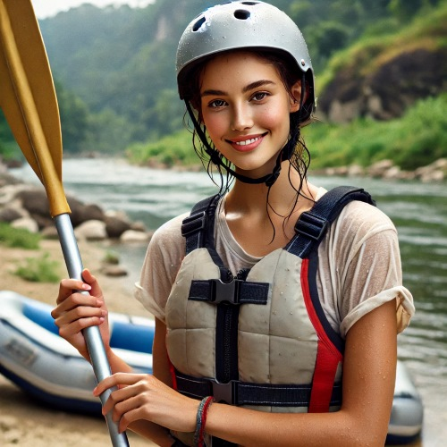
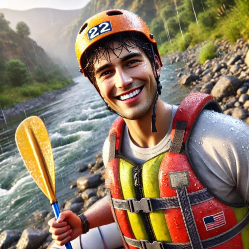

Dive right in and book a trip today!

The Fun Zone
Adventure For All
Our white-water rafting services are designed to offer adventurers an unforgettable experience on the river, blending excitement, safety, and convenience. With a variety of packages tailored to skill levels from beginners to experienced rafters, we provide guided tours through scenic and challenging rapids, ensuring every guest gets the adrenaline rush they're seeking. Our state-of-the-art rafts are equipped with comfortable seating and enhanced safety features, including reinforced inflatable material and grip handles for stability. Guests can enjoy optional waterproof photo and video packages to capture their journey, as well as pit stops at breathtaking riverbanks for snacks and scenic views. Each trip is led by certified rafting experts who share knowledge of the area’s wildlife and natural history, adding an educational touch to the adventure. For added comfort, we offer complimentary shuttle services, gear rentals, and eco-friendly river guides, ensuring a seamless and memorable outdoor excursion.
Reviews

"It was an amazing experience!" - Amanda

"Great people, great workout, great fun!" - Brady